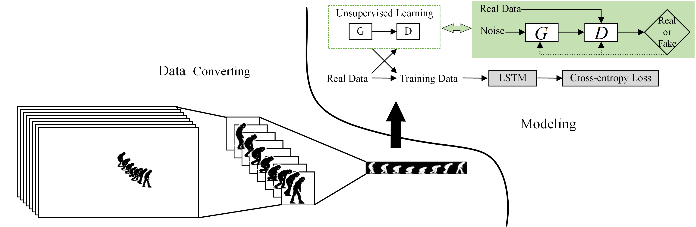

The abnormal behavior recognition for the parking scenes (Summer 2018)
Description: Due to the needs of the background of the project, more than 300 pieces of video data been expanded, includes crouch, fall, jump, bend, run and walk. Then extract keyframes for data generation and classification.
Paper:
Hongnian Wang, Han Sun, et al. Parking Anomaly Behavior Recognition Method Based on Key Sentence of Behavior Sequence Features, in
Computer Science, 2019.10 (in Chinese)

SKILLS
Software Skills: Python, C/C++, Keras, Pytorch.
Language: CET-6 Be good at speaking, listening, reading and writing.
Hobby: Marathon, Fitness.